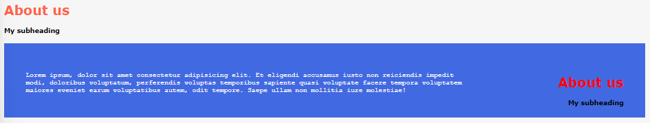

<< Volver al índice | SASS vs SCSS >>
SCSS son las siglas de Sassy Cascading Style Sheets. Fue creado hace aproximadamente 10 años por Hampton Catlin.
¿Dónde se puede usar SCSS? A día de hoy, puede usarse en prácticamente cualquier tipo de framework. No está atado a ningún tipo concreto de elemento.
¿Por qué usar SCSS? SCSS permite agilizar todo el proceso de implementación de un diseño. Escribir únicamente con CSS puro está bien, pero lo que SCSS permite, es agilizar el proceso de implementación de un diseño, ya que permite escribir código CSS de una forma más sencilla y rápida, eliminando cualquier tipo de proceso repetitivo.
Técnicamente, SCSS es un preprocesador, lo que significa que es un tipo de lenguaje que el navegador no entiende. Cuando el preprocesador se ejecuta, lo que hace es convertir todo el código SCSS que escribiste en código CSS, de forma que el navegador sí que lo entienda, construyendo tus propios archivos CSS para ti.
<< SCSS | Volver al índice | Variables >>
SASS es la versión original de SCSS. No se parece en nada al CSS y se preocupa por cosas como la indentación. No tiene llaves, tiene signos de más y signos de igual por todas partes, etc.
SCSS se parece exactamente al CSS, usa llaves y puntos y comas. Es mucho más familiar.
Si quieres escribir código CSS puro, un archivo SCSS lo procesará, mientras que la versión original de SASS lanzaría un error.
<< SASS vs SCSS | Volver al índice | Valores por defecto >>
Las variables son una especie de contenedor donde se puede almacenar el valor de una propiedad. En este caso, vamos a crear dos variables de colores para aplicarlas a lo largo el programa:
$off-white: #f6f6f6;
$master-site-color: darkred;
body {
background-color: $off-white;
height: 100vh;
width: 100vw;
}
.container {
font-family: Verdana, Geneva, Tahoma, sans-serif;
font-size: 0.8rem;
}
.page-wrapper {
padding: 21px;
.featured {
color: $master-site-color;
}
.page-content{
background-color: $master-site-color;
padding: 42px;
color: $off-white;
.container {
font-family: 'Courier New', Courier, monospace;
}
}
}
Este sería el resultado:
Como se puede ver, las variables son muy útiles para no tener que repetir el mismo valor en diferentes partes del código. Además, si se quiere cambiar el valor de una variable, se puede hacer de forma muy sencilla, sin tener que cambiar el valor en cada parte del código donde se haya usado.
Por ejemplo, si modificamos la variable $master-site-color a un color verde, el programa se vería así:

<< Variables | Volver al índice | Anidación >>
Aunque aún no se ha hablado de ellos, en este y el siguiente apartado se van a usar los mixins. Los mixins son una especie de funciones que se pueden usar en SCSS de las cuales hablaremos más adelante. No es importante saber qué son o cómo funcionan por ahora.
Podemos crear valores por defecto de la siguiente manera:
@mixin heading-feature-styling {
$feature-color: DarkRed !default;
color: $feature-color;
}
@mixin section-feature-styling {
$feature-color: DarkRed !default;
background-color: $feature-color;
padding: 42px;
color: $off-white;
}
Así es como se vería:
Si la variable $feature-color no se define (como si fuera una variable más), se usará el valor especificado antes de !default. Pero si se crea una variable con ese nombre, se usará ese valor de la variable:
/* VARIABLES */
$feature-color: darkgreen;
/* MIXINS */
@mixin heading-feature-styling {
$feature-color: DarkRed !default;
color: $feature-color;
}
@mixin section-feature-styling {
$feature-color: DarkRed !default;
background-color: $feature-color;
padding: 42px;
color: $off-white;
}
En este caso, así es como quedaría:
<< Variables | Volver al índice | Mixins >>
Para anidar elementos en CSS se podía utilizar < para indicar que un elemento se encontraba dentro de otro.
Con SCSS se vuelve todo mucho más sencillo. Ya se ha visto en los ejemplos anteriores la sintáxis para anidar elementos, o indicar que uno se encuentra dentro del otro. Para ello, basta con escribir y dar estilo al elemento dentro de su contenedor:
.page-wrapper {
padding: 21px;
.featured {
@include heading-feature-styling;
}
.page-content{
@include section-feature-styling;
.container {
font-family: 'Courier New', Courier, monospace;
}
}
}
En este ejemplo, podemos entender que el elemento .container se encuentra dentro del elemento .page-content, que a su vez se encuentra dentro del elemento .page-wrapper.
.page-content está dentro de .page-wrapper, pero .featured también, lo que significa que estos dos elementos se encuentran dentro de un mismo contenedor: .page-wrapper.
De nuevo, en CSS la forma de dar estilo a un elemento con una pseudoclase era la de volver a definir el elemento en otro bloque de código, pero con la pseudoclase añadida.
Ahora, con SCSS, se puede anidar el elemento con la pseudoclase, de la siguiente manera:
.subheading a {
color: cornflowerblue;
text-decoration: none;
&:hover {
color: darkolivegreen;
text-decoration: underline;
}
}
El equivalente CSS sería el siguiente:
.subheading a {
color: cornflowerblue;
text-decoration: none;
}
.subheading a:hover {
color: darkolivegreen;
text-decoration: underline;
}
En este caso, refetir la referencia al elemento dos veces no es muy tedioso porque no ha habido que especificar sus contenedores, pero sigue siendo una forma de repetirse de forma innecesaria. Es mucho más rápido aplicar SCSS.
<< Variables | Volver al índice | Con argumentos >>
Son una especie de funciones que pueden ser "llamadas". Son muy útiles para aplicar los mismos estilos en diferentes elementos, o simplemente para ayudar a organizar los estilos. Para definir un "mixin", se usa la sintaxis @mixin.
En este ejemplo, vamos a crear los siguientes:
@mixin heading-feature-styling {
color: $master-site-color;
}
@mixin section-feature-styling {
background-color: $master-site-color;
padding: 42px;
color: $off-white;
}
Esto haría que el programa se viera modificado, ¿por qué? ¿Qué es lo que falta?
Ahora, nos queda indicar qué elementos deben "coger" las propiedades definidas en dichos mixins. Para ello, se usa la palabra reservada @include:
.page-wrapper {
padding: 21px;
.featured {
@include heading-feature-styling;
}
.page-content{
@include section-feature-styling;
.container {
font-family: 'Courier New', Courier, monospace;
}
}
}
Como se puede observar, el resultado no se vería modificado:
<< Mixins | Volver al índice | Con condiciones >>
En el ejemplo de arriba hemos usado mixins sin argumentos, lo que significa que son estáticos, es decir, iguales para todos. Pero, ¿qué pasa si queremos que haya elementos compartiendo estilo con pequeñas diferencias? Para ello, se pueden usar argumentos en los mixins, como si se tratara de funciones:
@mixin featured($link-color: black) {
color: Tomato;
.subheading a {
color: $link-color;
text-decoration: none;
&:hover {
color: $link-color;
text-decoration: underline;
}
}
}
El mixin creado tiene una variable, $link-color, que por defecto tiene el valor black. Si no se le pasa ningún argumento, se usará el valor por defecto. Pero si se le pasa un argumento, se usará ese valor.
No es necesario indicar que $link-color tenga un valor concreto al declarar el mixin, podría no ponerse ninguno y enconces habría que especificar siempre un color al llamar al mixin.
Como en este caso hemos especificado un valor por defecto, podemos realizar lo siguiente:
.page-wrapper {
/* some code */
.featured {
@include featured; // no se pasa argumento -> usa el valor por defecto
}
.page-content{
/* some code */
.container {
/* some code */
.sidebar {
/* some code */
@include featured(mintcream); // usa el valor "mintcream"
}
}
}
}
El resultado sería el siguiente, donde se puede ver que cada link debajo del "About us" tiene un color distinto:

<< Mixins | Volver al índice | Content >>
Se pueden crear sentencias condicionales dentro de los mixins. Las sentencias condicionales (if, else if y else) pueden servir para definir distintos tipos de escenarios. Para definirlas, se debe escribir el caracter @ antes de cada una de ellas.
He aquí un ejemplo:
@mixin featured($bg-color: 'dark') {
@if $bg-color == 'light' {
color: Tomato;
} @else if $bg-color == 'dark' {
color: blue;
} @else {
color: red;
}
/* some other code */
}
Al igual que en el apartado anterior vimos cómo pasar parámetros a un mixin, en este caso las llamadas al mixin funcionan de la misma forma:
.page-wrapper {
/* some code */
.featured {
@include featured('light');
}
.page-content{
/* some code */
.container {
/* some code */
.sidebar {
/* some code */
@include featured('grey');
}
}
}
}
Lo que va a ocurrir es que el @include de la clase .featured entrará en el primer @if tomando el color tomato. El @include de la clase .sidebar entrará en la tercera opción (@else) tomando el color red porque no encaja con ninguna de las opciones anteriores.
Si no se le hubiera indicado ningún valor, hubiera entrado en la sentencia @else if porque tendría ese valor por defecto.
Este es el resultado:

<< Mixins | Volver al índice | Clases dinámicas >>
El @content es una palabra clave que permite realizar lo mismo que lo visto en el apartado de mixins con argumentos, pero de una forma más sencilla e intuitiva.
Vamos a suponer que tenemos el siguiente código HTML:
<body>
<div class="error">
There was an error processing your request.
</div>
<div class="success">
Your request was processed successfully.
</div>
</body>
Queremos que cada div tenga unos colores diferentes, pero los demás estilos sean los mismos. Para ello, vamos a crear un mixin que se aplique a ambos elementos:
@mixin notification($background-color, $color, $border){
width: 90%;
height: 35px;
text-align: center;
padding-top: 10px;
font-size: 1.2em;
font-family: Verdana, Geneva, Tahoma, sans-serif;
border-radius: 3px;
margin: 10px;
background-color: $background-color;
color: $color;
border: $border;
}
Ahora, para llamar al mixin y modificar los valores que queramos, se puede hacer de la siguiente forma:
.error {
@include notification($background-color: DarkRed, $color: white, $border: 1px solid LightSlateGray)
}
.success {
@include notification($background-color: MediumSeaGreen, $color: MintCream, $border: 1px solid LightSalmon)
}
Esto sería lo primero que se nos hubiera ocurrido. Sin embargo, a la hora de llamar al mixin, no se ve de forma tan clara qué valores están siendo modificados.
Para ayudar a ver esto de forma más clara, se puede utilizar el @content, manteniendo dentro del mixin el código que se quiere repetir, y fuera del mixin, el código que se quiere modificar.:
@mixin notification{
width: 90%;
height: 35px;
text-align: center;
padding-top: 10px;
font-size: 1.2em;
font-family: Verdana, Geneva, Tahoma, sans-serif;
border-radius: 3px;
margin: 10px;
@content;
}
Ahora, para llamar al mixin y modificar los valores que queramos, se puede hacer de la siguiente forma:
.error {
@include notification{
background-color: darkred;
color: white;
border: 1px solid lightslategray;
}
}
.success {
@include notification{
background-color: mediumseagreen;
color: mintcream;
border: 1px solid lightsalmon;
width: 75%; // sobreescribe el valor del mixin
}
}
El resultado es el siguiente:

<< Content | Volver al índice | Listas >>
En este apartado se va a hablar de cómo crear clases dinámicas utilizando un ejemplo muy sencillo:
Imagina que se tiene este código HTML:
<body>
<div class="car-maserati"></div>
<div class="car-tesla"></div>
<div class="car-porsche"></div>
</body>
Y se desea utilizar 3 imágenes diferentes para cada uno de los div. El estilo de cada elemento va a ser el mismo, siendo la imagen de fondo la única diferencia.
¿Qué se puede hacer?
Vamos a aprender a crear clases dinámicas para escribir únicamente un bloque de código que se aplique a los tres elementos gracias a modificar su clase.
Para ello, vamos a seguir los siguientes pasos:
each para recorrer la lista y crear una clase dinámica para cada elemento.Para crear las clases dinámicas, se va a utilizar la interpolación de strings. Esto permite crear una cadena de texto que se modifique utilizando variables.
<< Clases dinámicas | Volver al índice | Each >>
Para crear una lista en SCSS, se realiza lo siguiente:
$cars: 'maserati', 'tesla', 'porsche';
Como se puede ver, es una variable, cuya sintaxis es la misma que la de cualquier otra variable. La diferencia es que en lugar de contener un valor, contiene una lista de valores.
<< Clases dinámicas | Volver al índice | Interpolar strings >>
La directiva each permite recorrer una lista y ejecutar un bloque de código para cada uno de los elementos de la lista.
La sintaxis es la siguiente:
@each $item in $list {
/* some code */
}
En nuestro ejemplo, vamor a realizar lo siguiente:
@each $car-name in $cars {
.car-#{$car-name} {
/* some code */
}
}
Con estas líneas de código, se creará una clase dinámica para cada elemento de la lista. El nombre de la clase será el nombre del elemento de la lista precedido por la palabra car-. Lo que daría como resultado las mismas clases que las que hemos visto en el código HTML.
Dentro de este bloque utilizaremos la interpolación de strings para crear las clases dinámicas.
<< Clases dinámicas | Volver al índice | Import >>
La interpolación de strings permite crear una cadena de texto que se modifique utilizando variables.
Para introducir una variable dentro de un string se utiliza el caracter # seguido del nombre de la variable.
#{$variable}
Siguiendo nuestro ejemplo, el código sería el siguiente:
.car-#{$car-name} {
background-image: url('../../images/module-01/03/#{$car-name}.jpg');
background-repeat: no-repeat;
height: 300px;
width: 500px;
object-fit: fill;
float: left;
}
Con la línea de código mostrada aquí:
background-image: url('../../images/module-01/03/#{$car-name}.jpg');
Se está creando una cadena de texto que contiene la ruta de la imagen. El nombre de la imagen se obtiene de la variable $car-name que se está interpolando en el string.
El código final completo sería el siguiente:
$cars: 'maserati', 'tesla', 'porsche';
@each $car-name in $cars {
.car-#{$car-name} {
background-image: url('../../images/module-01/03/#{$car-name}.jpg');
background-repeat: no-repeat;
height: 300px;
width: 500px;
object-fit: fill;
float: left;
}
}
El resultado sería el siguiente:

<< Clases dinámicas | Volver al índice
La directiva @import permite importar archivos SCSS dentro de otros archivos SCSS. Esto permite dividir el código en archivos más pequeños y reutilizar código.
Por lo general, se usa un archivo principal que importa todos los demás archivos.
Esto requiere tener cuidado con el orden de importación de los archivos. Como recordatorio, SCSS viene de Sassy Cascading Style Sheets, lo que significa que el orden de importación de los archivos es importante, ya que unos elementos podrían modificar a otros.
Se ha de saber también, que @import es una directiva un poco antigua. En la actualidad, se recomienda utilizar @use para importar archivos SCSS.
Si tienes alguna duda o sugerencia acerca del contenido de este documento o cualquier otro asunto, no dudes en contactar conmigo: